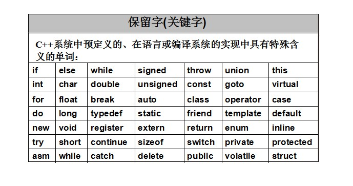

Las palabras clave de C++ están reservadas por el lenguajePalabras especiales, no pueden usarse como nombres de variables, funciones, etc. Controlan el comportamiento, los tipos, el flujo, etc. del programa.
1. Tipos de datos básicos (los más comunes)
| Palabra clave | Significado (versión para principiantes) | Ejemplo / Descripción | Notas |
|---|---|---|---|
| bool | Tipo booleano, solo true / false | bool ok = true; |
Núcleo de las condiciones |
| char | Carácter individual (normalmente 1 byte) | char c = 'A'; |
Usa comillas simples |
| wchar_t | Carácter ancho (común para soportar chino, etc.) | wchar_t wc = L'中'; |
2 o 4 bytes, según la plataforma |
| char8_t | Carácter UTF-8 (nuevo en C++20) | char8_t c8 = u8'好'; |
Programación Unicode moderna |
| char16_t | Carácter UTF-16 (C++11) | ||
| char32_t | Carácter UTF-32 (C++11) | ||
| int | Entero (normalmente 4 bytes) | int age = 18; |
El tipo entero más común |
| short | Entero corto (normalmente 2 bytes) | short s = 1000; |
Úsalo para ahorrar espacio |
| long | Entero largo (al menos 4 bytes, comúnmente 8 bytes) | long l = 1234567890L; |
Agrega el sufijo L |
| long long | Entero más largo (al menos 8 bytes, formal en C++11) | long long big = 1LL<<60; |
Para manejar números grandes |
| float | Número de coma flotante de precisión simple | float f = 3.14f; |
Agrega el sufijo f |
| double | Número de coma flotante de doble precisión (tipo de coma flotante predeterminado) | double pi = 3.1415926535; |
Mayor precisión |
| void | Sin tipo (funciones que no devuelven valor, punteros genéricos, etc.) | void func(); |
Común en declaraciones de funciones |
| unsigned | Sin signo (se combina con int/long, etc.) | unsigned int id = 4000000000u; |
Mayor rango, pero no puede representar negativos |
2. Ciclo de vida de variables/objetos y almacenamiento (Storage & Duration)
| Palabra clave | Significado (versión para principiantes) | Ejemplo / Uso común | Recomendación moderna |
|---|---|---|---|
| auto | Deja que el compilador deduzca el tipo automáticamente (el uso más importante desde C++11) | auto x = 3.14; → double |
Muy recomendado, lo más común al escribir código |
| const | Constante, no modificable | const int MAX = 100; |
Más seguro que #define, tiene verificación de tipos |
| static | Almacenamiento estático (compartido dentro del archivo, compartido entre miembros de clase, conserva el valor dentro de la función) | static int count = 0; |
Los miembros estáticos de clase deben inicializarse fuera de la clase |
| extern | Declara que la variable/función está definida en otro lugar (uso entre archivos) | extern int globalVar; |
Común en proyectos de múltiples archivos |
| thread_local | Cada hilo tiene su propia copia (C++11) | Programación multihilo | |
| register | Sugerencia de poner en registro (los compiladores modernos lo ignoran en su mayoría) | Prácticamente no se usa, obsoleto | |
| mutable | Permite que una función miembro const modifique ese miembro | Caso especial dentro de la clase |
3. Clases y el núcleo de la programación orientada a objetos (fundamentos de OOP)
| Palabra clave | Significado (versión para principiantes) | Ejemplo / Descripción | Importancia |
|---|---|---|---|
| class | Define una clase (private por defecto) | class Student { ... }; |
★★★★★ |
| struct | Define una estructura (public por defecto, compatible con C) | struct Point { int x,y; }; |
★★★★ |
| public | Miembro público, cualquiera puede acceder | ||
| private | Miembro privado, solo la propia clase y los amigos (friend) pueden acceder | ||
| protected | Miembro protegido, accesible para la propia clase + clases derivadas + amigos | ||
| this | Puntero al objeto actual | this->age = 18; |
Común para distinguir parámetros con el mismo nombre |
| friend | Amigo (friend) (permite acceder a private/protected) | friend class Utils; |
Se usa poco, úsalo con cuidado porque rompe el encapsulamiento |
| virtual | Función virtual (para lograr polimorfismo) | virtual void draw() = 0; |
Núcleo del polimorfismo |
| override | Declara explícitamente que esto es una sobrescritura (C++11, se recomienda agregarlo) | void draw() override; |
Evita errores de escritura |
| final | Prohíbe herencia/prohíbe sobrescritura (C++11) | class My final {} |
Intención de diseño clara |
| explicit | Prohíbe conversiones implícitas (más común en constructores de un solo parámetro) | explicit MyClass(int x); |
Evita conversiones accidentales |
4. Gestión de memoria y punteros
| Palabra clave | Significado (versión para principiantes) | Ejemplo / Descripción | Recomendación moderna |
|---|---|---|---|
| new | Asigna memoria dinámicamente (devuelve un puntero) | int* p = new int(5); |
Usa punteros inteligentes siempre que sea posible |
| delete | Libera la memoria asignada con new | delete p; delete[] arr; |
Úsalo en pareja para evitar fugas de memoria |
| nullptr | Constante de puntero nulo (C++11, reemplazo recomendado de NULL) | int* ptr = nullptr; |
Muy recomendado |
5. Conversión forzada de tipos (4 tipos de cast, seguridad decreciente)
| Palabra clave | Significado (versión para principiantes) | Seguridad | Escenarios de uso recomendados |
|---|---|---|---|
| static_cast | Conversión en tiempo de compilación (tipos relacionados, conversiones numéricas, etc.) | 高 | El más usado en el día a día |
| const_cast | Agregar/quitar const o volatile | 中 | Se usa muy poco, peligroso |
| dynamic_cast | Conversión descendente segura en tiempo de ejecución (clases polimórficas) | 高 | Verifica tipos en la jerarquía de herencia |
| reinterpret_cast | Reinterpretación de bajo nivel y peligrosa del patrón de bits (conversión arbitraria entre punteros) | 低 | Se usa muy poco (por ejemplo, interacción con hardware) |
6. Control de flujo (lo más básico)
| Palabra clave | Significado (versión para principiantes) | Ejemplo |
|---|---|---|
| if / else | Condición (si se cumple, ejecuta; de lo contrario, ejecuta otra parte) | int a = 8; if (a > 10) { cout << "大于10"; } else { cout << "不大于10"; } |
| switch | Selección de múltiples ramas (solo admite tipos enteros/enumeración/char) | int score = 9; switch (score) { case 9: cout << "优秀"; break; default: cout << "普通"; } |
| case / default | Etiquetas de rama dentro de switch (case coincide con el valor, default coincide con todos los casos no coincidentes) | char ch = 'a'; switch (ch) { case 'a': cout << "字母A"; break; default: cout << "其他字符"; } |
| for | Bucle de conteo/rango (adecuado para escenarios con un número conocido de iteraciones) | for (int i=0; i<10; i++) { cout << i; }(bucle de conteo)vector<int> v={1,2,3}; for (int num : v) { cout << num; }(bucle de rango) |
| while | Primero evalúa y luego ejecuta (número desconocido de iteraciones, solo itera si se cumple la condición) | int i=1; while (i<=5) { cout << i; i++; } |
| do | Ejecuta al menos una vez y luego evalúa (número desconocido de iteraciones, garantiza la primera ejecución) | int i=1; do { cout << i; i++; } while (i<=5); |
| break | Sale del bucle/rama switch actual (termina directamente, no ejecuta el resto) | for (int i=0; i<10; i++) { if (i==5) break; cout << i; }(salir del bucle)switch (score) { case 9: break; }(salir de la rama switch) |
| continue | Salta el resto de la iteración actual y pasa directamente a la siguiente | for (int i=0; i<10; i++) { if (i%2==0) continue; cout << i; }(solo imprime impares) |
| return | Devuelve el resultado de la función (funciones con valor de retorno) o termina antes una función void | int add(int a, int b) { return a + b; }(devolver el resultado de la función)void print() { if (1) return; cout << "此行不会执行"; }(terminar antes una función void) |
7. Manejo de excepciones (aún común en C++ moderno, pero no la primera opción)
try / catch / throw
8. Plantillas y genéricos modernos (nivel intermedio/avanzado)
template、typename、concept（C++20）、requires（C++20）
9. Otros importantes pero menos frecuentes
- constexpr(C++11): constantes/funciones en tiempo de compilación
- inline: sugiere función inline (común en definiciones de archivos de cabecera en la actualidad)
- enum: enumeración (se recomienda enum class en la actualidad)
- namespace / using: gestión de espacios de nombres
- sizeof: tamaño en bytes de un tipo/objeto
- typeid: información de tipo en tiempo de ejecución (se usa poco)
- asm: ensamblador embebido (se usa muy poco)
- goto: salto (Muy desaconsejado, rompe la estructura)
- export: exportación de plantillas antes de C++20 (ahora prácticamente inútil)
Ejemplo
1. auto (deducción automática de tipo
Deja que el compilador escriba el tipo por ti, código más limpio y menos errores.
Ejemplo
#include <vector>
#include <string>
int main() {
auto a = 42; // 推导成 int
auto b = 3.14; // Se deduce como double
auto c = "hello"; // Se deduce como const char*
auto d = std::string("world"); // Se deduce como std::string
auto vec = std::vector{1, 2, 3}; // Se deduce como std::vector<int>
std::cout << a << " " << b << " " << c << " " << d << "\n";
for (auto x : vec) { // auto se usa a menudo en los bucles for de rango
std::cout << x << " ";
}
std::cout << "\n";
}
Salida:
42 3.14 hello world 1 2 3
2. const (constante)
Protege las variables de modificaciones accidentales y escribe código más seguro.
Ejemplo
int main() {
const int MAX = 100; // Debe inicializarse, no se puede modificar
// MAX = 200; // ¡Error! No se puede modificar
const double PI = 3.14159;
std::cout << "π ≈ " << PI << "\n";
int x = 10;
const int* p = &x; // El contenido al que apunta el puntero no se puede modificar
// *p = 20; // ¡Error!
x = 30; // Pero se puede cambiar la propia x
std::cout << *p << "\n";
}
圆周率 ≈ 3.14159 30
3. static (estático)
Hace que las variables "vivan más tiempo", se usa a menudo para contadores y datos compartidos.
Ejemplo
void counter() {
static int count = 0; // Solo se inicializa una vez, no se destruye al finalizar la función
count++;
std::cout << "Llamada n.º " << count << " (invocación)"\n";
}
int main() {
counter(); // 1
counter(); // 2
counter(); // 3
}
Salida:
第 1 次调用 第 2 次调用 第 3 次调用
4. nullptr (puntero nulo moderno)
Es más seguro y claro que NULL, evita confusión de tipos.
Ejemplo
int main() {
int* p1 = NULL; // Estilo antiguo (no recomendado)
int* p2 = nullptr; // Escritura recomendada en C++ moderno
if (p2 == nullptr) {
std::cout << "p2 es un puntero nulo\n";
}
// nullptr solo se puede asignar a punteros, no a enteros
// int x = nullptr; // ¡Error!
}
Salida:
p2 是空指针
5. for basado en rango (bucle for de rango for(auto : ))
La forma más simple y segura de recorrer contenedores.
Ejemplo
#include <vector>
int main() {
std::vector<int> scores {85, 92, 78, 95};
// Escritura tradicional
for (size_t i = 0; i < scores.size(); ++i) {
std::cout << scores[i] << " ";
}
std::cout << "\n";
// Escritura moderna (recomendada)
for (auto score : scores) {
std::cout << score << " ";
}
std::cout << "\n";
// Si se necesita modificar elementos, usa una referencia
for (auto& score : scores) {
score += 5;
}
for (auto score : scores) {
std::cout << score << " ";
}
}
Salida:
85 92 78 95 85 92 78 95 90 97 83 100
6. explicit (prohibir conversiones implícitas)
Evita que conversiones de tipo accidentales causen errores; añadir explicit es más riguroso.
Ejemplo
class Distance {
private:
double meters;
public:
// explicit Distance(double m) : meters(m) {} // Añadir explicit es más seguro
Distance(double m) : meters(m) {} // Sin él se convertiría implícitamente
double get() const { return meters; }
};
void print(double d) {
std::cout << "Distancia: " << d << " metros\n";
}
int main() {
Distance d = 500; // Si el constructor no es explicit, esto está permitido
print(d); // Convierte implícitamente Distance → double
// print(500); // Si se añade explicit, esta línea daría error
}
Salida (sin explicit):
距离: 500 米
7. override (sobrescritura explícita de funciones virtuales)
Escribir override permite que el compilador compruebe si realmente estás anulando una función virtual.
Ejemplo
class Animal {
public:
virtual void speak() const {
std::cout << "Sonido de algún animal\n";
}
};
class Dog : public Animal {
public:
void speak() const override { // Añadir override es lo más seguro
std::cout << "¡Guau guau guau!\n";
}
};
int main() {
Animal* pet = new Dog();
pet->speak();
delete pet;
}
Salida:
汪汪汪！
8. constexpr (cálculo en tiempo de compilación)
Hace que los cálculos se realicen en tiempo de compilación, haciendo el programa más rápido y seguro.
Ejemplo
constexpr int factorial(int n) {
return (n <= 1) ? 1 : n * factorial(n - 1);
}
int main() {
constexpr int f5 = factorial(5); // Calcula 120 en tiempo de compilación
std::cout << "5! = " << f5 << "\n";
int x = 6;
// constexpr int f6 = factorial(x); // ¡Error! x no es una constante
std::cout << "6! = " << factorial(x) << "\n"; // También se puede calcular en tiempo de ejecución
}
Salida:
5! = 120 6! = 720
9. using (espacio de nombres + alias de tipo)
using permite simplificar espacios de nombres y crear alias de tipos legibles.
Ejemplo
#include <vector>
// typedef tradicional
typedef std::vector<int> IntVec;
// using moderno (más flexible, se puede usar con plantillas)
using StringVec = std::vector<std::string>;
int main() {
using std::cout; // Solo se introduce cout
using std::endl;
IntVec v1 {1, 2, 3};
StringVec v2 {"Manzana", "Plátano"};
cout << v1.size() << " " << v2.size() << endl;
}
Salida:
3 2
10. enum class (enumeración fuertemente tipada)
Es más seguro que el enum normal, no se mezcla accidentalmente con enteros.
Ejemplo
enum class Color { Red, Green, Blue }; // Fuertemente tipado, no se convierte implícitamente a int
int main() {
Color c = Color::Green;
// if (c == 1) {} // ¡Error! No se puede comparar directamente con int
if (c == Color::Green) {
std::cout << "Es verde\n";
}
// Para convertir a int se necesita conversión explícita
std::cout << "Valor subyacente: " << static_cast<int>(c) << "\n";
}
Salida:
是绿色 底层值: 1
Haz clic para compartir notas
<p style="font-size:14px;">¡La nota debe ser una extensión del contenido de este artículo!</p><br> <p style="font-size:12px;"><a href="../tougao.html" target="_blank">Envío de artículos, haz clic aquí</a></p> <p style="font-size:14px;"><a href="./runoob-user-test-intro.html" target="_blank">Cómo obtener el código de invitación de registro</a></p> <h3 class="text-muted"><i class="fa fa-info-circle" aria-hidden="true"></i> ¡Debes <a href=".." class="runoob-pop">iniciar sesión</a> antes de compartir notas!</h3> <p><a href="./runoob-user-test-intro.html" target="_blank">Cómo obtener el código de invitación de registro</a></p>